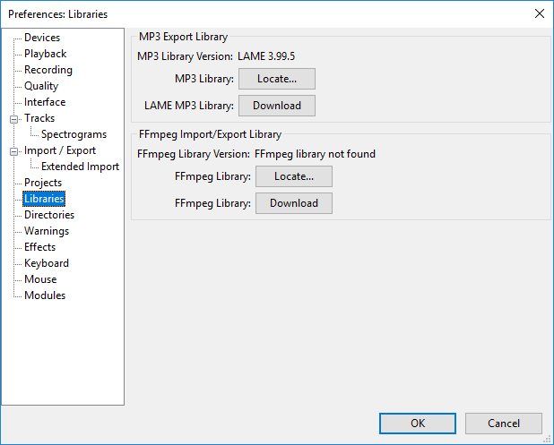

Installing and updating Audacity on Windows
From Audacity Development Manual
- In addition to basic Audacity you may wish to install the optional LAME MP3 encoding software
- Also the optional FFmpeg library which allows Audacity to import and export a much larger range of audio formats including M4A (AAC), AC3, AMR (narrow band) and WMA and also to import audio from most video files.
Contents
- Installation instructions
- Check for Updates
- Installing LAME on Windows
- Installing the FFmpeg Import/Export Library on Windows
Installation instructions
Save: On the download page, left-click the "installer" link (do not right-click). Left-clicking pops up the download box for the Audacity installer or in Microsoft Edge starts the download at once (at this point you will be on the FossHub site where our downloads are hosted). Save the download to your computer if prompted to do so. Check the browser preferences if necessary to find out where your downloads are saved. Then double-click the downloaded .exe file to start the installer. You must be logged in as an administrator on the computer to do this, or follow the prompts to confirm your permission to install.
Run: Using Internet Explorer and a few other browsers, you can left-click the "installer" link and select an option to "Run" the file. This launches the Audacity setup as soon as it has downloaded. Note: Some security applications will query or block installers running from the computer's temporary space.
System Requirements
For detailed system requirements for a Windows installation see this page on the Audacity Website
No need to uninstall a previous version before updating, unless updating from Audacity 1.3.x
If you install a new Audacity version after installing a previous one, the installer will offer to install to the same directory as the previous installation. If the previous installation was Audacity 1.2 or 2.x, the installation directory is normally Program Files\Audacity (or Program Files(x86)\Audacity on 64-bit Windows). As long as you do not change the installation directory, Audacity will install over the previous 1.2 or 2.x version, and any extra plug-ins you added to the "Plug-Ins" folder will still be available.If the previous version was 1.3.x, please uninstall 1.3 before installing the current 2.x version. After uninstalling 1.3, any extra plug-ins you added to that version will remain, and you can move them to the "Plug-Ins" folder of the new installation.
Otherwise there is no need to upgrade LAME or FFmpeg unless this is indicated in the Release Notes for the new version of Audacity. |
Check for Updates
You can check to see if you have the latest version of Audacity by using .
This takes you to the Download page of the Audacity website where you can check what the latest release version of Audacity is.
You can then compare the latest release with the version you have now as shown by using .
Installing LAME on Windows
- Go to the external LAME download page
Left-click this link, do not right-click. - Directly underneath "TO DOWNLOAD Lame and FFmpeg for Windows, click links BELOW:", left-click the link Lame v3.99.3 for Windows.exe and save the file anywhere on your computer.
- Double-click "Lame v3.99.3 for Windows.exe" to launch it (you can safely ignore any warnings that the "publisher could not be verified").
- Follow the Setup instructions to install LAME for Audacity, making sure not to change the offered installation location of "C:\Program Files\Lame for Audacity" (or "C:\Program Files (x86)\Lame for Audacity" on a 64-bit version of Windows).
You should now be able to export MP3s without any further configuration, choosing then selecting "MP3 Files" in the Export Audio Dialog.
ZIP file option
If you cannot run the LAME installer due to restrictions on your computer, or if you want a later specially built LAME 3.99.5 version, download the appropriate ZIP file from the LAME download page. Extract the contents of the ZIP file to a location of your choosing, then use the button for LAME in Libraries Preferences to browse for and open the extracted DLL file.
Troubleshooting
Occasionally, there may be a conflict where Audacity still tries to detect the path to an older lame_enc.dll file. To correct this:
- Ensure there are no older versions of lame_enc.dll in any locations where Audacity detects it, namely:
- C:\Program Files\Lame for Audacity or C:\Program Files (x86)\Lame for Audacity (this is where the installer puts the new .dll)
- the Audacity installation folder (usually C:\Program Files\Audacity or C:\Program Files (x86)\Audacity), or in the "Plug-Ins" folder inside that.
- Exit Audacity and navigate to the audacity.cfg preferences file at:
- Windows 10/Windows 8/Windows 7/Windows Vista: Users\<username>\AppData\Roaming\Audacity\audacity.cfg.
- Windows XP: Documents and Settings\<username>\Application Data\Audacity\audacity.cfg
- Open audacity.cfg in a text editor such as Notepad, and delete the two lines starting with:
- [MP3]
MP3LibPath=
- [MP3]
- Save the changes to audacity.cfg and restart Audacity.
| In order to see audacity.cfg, you may need to set the operating system to show hidden files and folders. See instructions for Windows XP or later Windows. |
Installing the FFmpeg Import/Export Library on Windows
- Because of software patents, Audacity cannot include the FFmpeg software or distribute it from its own websites. Instead, use the following instructions to download and install the free and recommended FFmpeg third-party library.
- Advanced usage: If you already have Audacity-compatible FFmpeg 2.2.x or 2.3.x shared libraries in the system PATH, Audacity will use those as long as you do not install FFmpeg from the links below and as long as you do not specify the FFmpeg you want Audacity to use in Libraries Preferences.
- Go to the external download page
Left-click this link, do not right-click. - Directly underneath "TO DOWNLOAD Lame and FFmpeg for Windows, click links BELOW:", left-click the link ffmpeg-win-2.2.2.exe and save the file anywhere on your computer.
- Double-click ffmpeg-win-2.2.2.exe to launch the installer (you can safely ignore any warnings that the "publisher could not be verified").
- Read the License and click Next, Next and Install to install the required files to C:\Program Files\FFmpeg for Audacity (or C:\Program Files (x86)\FFmpeg for Audacity on a 64-bit version of Windows).
If you have the previous FFmpeg 0.6.2 installed to the same location, the FFmpeg 2.2.2 installation will overwrite the 0.6.2 installation with the new files. There is no need to uninstall FFmpeg 0.6.2 first.
- If Audacity was running when you installed FFmpeg, either restart Audacity or follow the steps to manually locate FFmpeg.
Alternative zip download for FFmpeg 2.2.2
- Go to the external download page
Left-click this link, do not right-click. - Under "TO DOWNLOAD Lame and FFmpeg for Windows, click links BELOW:", left-click the link ffmpeg-win-2.2.2.zip and save the file anywhere on your computer.
- Extract the entire contents of the downloaded ZIP file to a folder called "ffmpeg-win-2.2.2" anywhere on your computer, then follow the instructions below to locate the file "avformat-55.dll" using the Libraries Preferences.
Locating the FFmpeg library manually
If you installed FFmpeg while Audacity was running, or if you installed FFmpeg to a non-default location, Audacity will ask you to configure Preferences to locate the FFmpeg library. To do this, access Preferences then the "Libraries" tab on the left:
- 
As seen in the image above, the "FFmpeg Library Version" will say "not found". To correct this:
- Click the button to right of FFmpeg Library:.
- If a "Success" message indicates Audacity has now automatically detected valid FFmpeg libraries and asks if you want to detect them manually, click , then to close Preferences.
- If the "Locate FFmpeg" dialog appears, click .
- Navigate to the folder that contains FFmpeg, and select the file avformat-55.dll.
- Click then and again to close Preferences.
FFmpeg Library Version should now show a set of three version numbers for the sub-libraries of FFmpeg ("F" for libavformat version, "C" for libavcodec version and "U" for libavutil version). If you still see "not found", you may have installed the wrong libraries. Click the button to obtain the correct library for your operating system. You can also choose to see diagnostic information about FFmpeg detection.